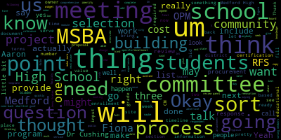
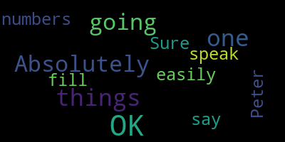
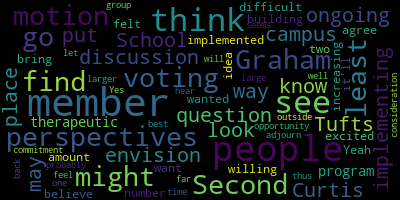
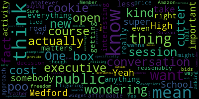

[Peter Cushing]: All right, we are good to go.
[Graham]: Thank you, Dr. Cushing. I'm going to read the meeting notice, Dr. Cushing. I think there's some folks in the waiting room if you want to let them in. So I will read the meeting notice so we can get started. Please be advised that on Tuesday, February 11th, 2025 at 7 p.m., there will be an MSBA OPM selection subcommittee meeting held through remote participation via Zoom. The meeting can be Viewed live on Medford Public Schools' YouTube channel, through Medford Community Media on your local cable, which is Comcast channel 98 or 22, and Verizon channel 43, 45, or 47, the meeting will be recorded. Since the meeting will be held remotely, participants can call or log in by using the following link or call-in number. The meeting ID is 919-3243-1716. Questions can be submitted during the meeting by emailing Jenny Graham at medford.k12.ma.us. Those submitting must include your first and last name, your Medford Street address, and your question or comment. I'm going to go ahead and call the roll. Jenny Graham here. Fiona Maxwell. We have Fiona. Erin Lopate. Sorry, Jenny, I am here. Sorry. Thank you, Fiona. Peter Cushing? Present. John McLaughlin? John is here. And Bob Dickinson? See Bob as well. So three voting members present, zero absent. We have a quorum. So, what I was hoping to do tonight was a couple of things. So, 1st, provide some updates and talk a little bit about this next phase of the project for for and then actually. Look at. a drafted deliverable that we'll need to complete for the MSBA. I'll talk about that in just a second. Then implicit in all of that will be to discuss our vetting and selection process. My hope for tonight is that we can come out of it with an RFS that is pretty well complete and ready to be vetted and viewed by MSBA, which is one of the steps in the process. But between now and then we have a couple of things to look at in the RFS. So we'll get to that in just a minute. In terms of sort of what happens in this next module, there's two components, two big components of module 2. One is to hire the OPM and the other is to hire the designer. So we're not going to worry about the designer just yet because we have to hire an OPM before that can happen. I believe that We will be recommended for approval at the board meeting coming up on the 26th of February and that will be our invitation to the next phase of the project. So this is module 2 of MSBA, which is where we hire our team. That's actually going to help do the lion's share of the work. So. I'm excited for the next phase because I think our work gets easier when we have the professionals on board who do this for a living instead of all of us having to figure out and learn. all the moving parts of the MSBA process. So once that happens, we will have to do a number of things. So we will have to identify an OPM selection committee, which we actually have already done. It is this group. We identified and voted on this back in September. As I think about the work ahead, and we can maybe come back to this at the end, but as of right now, we have three voting members on this committee, myself, Aaron, and Dr. Cushing, and we will make the selection of the OPM. So that's actually, in my mind, quite a small group of people to pick what becomes a really central figure in our process. We may want to think about at our next full committee meeting, adding some number of voting members to this committee members. So, thank you for joining. And certainly, you know. The more the merrier is probably not the right thought process to make this happen, but I do think we should welcome. Some perspectives outside of school administration and elected officials to the process. So we have to think about that. We can come back to that at the end once we have once I can give you a little bit more information about. Um, what this process is and what the and more and I think as importantly, what the timeline is. So, um, once we get sort of flagged through to this next phase, we will have to do a couple of things to MSBA. We have to designate our procurement admin. Um, that's Fiona. So we know who that is. We just have to officially put that in writing and move along. We have to let them know who our selection committee is, which we will be able to do pretty quickly. And then we will have to give them a draft of what they call RFS, request for services, that shows our redlined version of their template. So MSBA does require that we use their template. It's quite prescriptive. It made it actually quite easy to fill out, which was wonderful as I was working on this with Will from our communications team. So we will have to seek their approval on how we have filled out this document. The document includes any number of things. Once they approve, we will then have to advertise this in three places. We will have to advertise it in what the MSBA calls the central register. We'll have to advertise this in a newspaper, and we'll have to advertise this on Combis is my understanding. Generally, they do recommend that we hold an onsite meeting for interested bidders. We will then have to go through a process, which we do have to lay out in the RFS where we. Score all of our. All of the bid submissions that we receive, we will then down select to a shortlist service set and invite those folks into visit with us live. We will then. Call references, make a selection and bring that selection to the. the OPM review panel that is hosted by the MSBA on a monthly basis. Once they agree with our selection through that process, then we're free to move into executing a contract. So that's like the process in a teeny tiny nutshell. I'll stop there and find out if there are any questions.
[Maxwell]: Thank you for providing that process in a nutshell. That sounds great.
[Graham]: Good. And Fiona, I think I did have one question for you. It talked about advertising in the Central Register, the newspaper, and Combis. Am I correct in assuming that your office will be able to handle that upon issue?
[Maxwell]: Absolutely. That's what we do every day.
[Graham]: Yep. OK, perfect. So really, having said all of that, this team will have its work cut out for us as we look at the bid submissions and pick our partner in all of this as we go forward. So I'm going to share my screen and walk through the RFS with you all. I'm happy to share a copy of this once we're done. I meant to share it before now, but I was still working on it like five minutes ago. But I think overall, what we need to make sure that we're doing is giving bidders an opportunity to know sort of what we're looking for and what we're seeking, as well as sort of staying compliant with what the MSBA is asking us to do. So let me pull that up real quick. I'm going to apologize in advance because it's a little, little wacky with all of the red lines, but that's okay. Can everybody see my screen? Yeah. Okay, so this is the template that the provides and the 1st piece is. Instructions, right? So. We have to follow the instructions. We have to review this RFS and make sure that all of our owner specific information is in here. We need to review this RFS with our legal counsel to ensure it's in compliance with our federal, state and local laws. for the school committee, that's Howard Greenspan. He is our school committee attorney. So unless, Fiona, there is somebody else that typically isn't involved from a procurement perspective, my thought would be to pass this by Howard to make sure that he is on board. Do you agree with that? 100%, yes. He is, yeah. OK, great. So we'll have to submit this red line version for MSBA's review prior to advertisement. Yes. We will also include a series of attachments, which I'll talk about later. We'll have to, a copy of the final RFS and advertisement needs to be submitted to the MSBA with a sample narrative summary and checklist. So we'll have to get that done. An owner should allow a minimum of 10 business days for the MSBA to review the RFS and we should not be advertising until MSBA approves. So those are our sort of rules and requirements here. So as we move forward here, essentially in this template, everything that's in bold and italics are places where the MSBA is telling us this is for you to fill out. So this first section is pretty straightforward. in terms of just replacing our name and that kind of thing. This part right here, it does talk about potential approved project may include a renovation of an existing school, a renovation of an addition of an existing school and or new construction, which is why these total project costs have a big range. This is a range that I looked at based on what I see in the marketplace, because if we are going to pursue some sort of renovation, it might be much smaller. If we're pursuing a completely new build, it would be much bigger. And it's all dependent on the solution that we all agree to. Questions about that so far? Okay. Then it asks for a background. So this did right with the help of my technological friends over at CHAP-GPT, who have the benefit of all of our documents posted to the website. But essentially what they are asking for here is some Some background information about the city, the school building committee, our grade configuration, just things that are pertinent. So I will read what I've written. I take no offense if you think it's terrible, but we can wordsmith it as we go. The city of Medford, located in the greater Boston area, is a dynamic and growing community that places strong emphasis on educational excellence. The district is committed to providing an inclusive and innovative learning environment with a focus on preparing students for success in a rapidly changing world. The Medford High School, established in the mid-20th century, has served as a cornerstone of the community's educational infrastructure. However, over time, the building has become increasingly outdated and no longer meets the evolving needs of students, educators, or the broader community. The facility's aging systems, limited space, and lack of modern learning environments have prompted the city to pursue significant renovations and improvements to the high school campus. The Medford Comprehensive High School Building Committee is comprised of a diverse group of stakeholders, including elected officials, city officials, school district representatives, and community members with a variety of backgrounds. The committee's primary mission is to oversee the planning and execution of the Medford High School project, ensuring that it meets academic, social, and safety needs of students. The committee has broad support to also pursue expansion of its portfolio of Chapter 74 programs, its early childhood programs, and to co-locate the current Curtis Tufts program to increase access to programming for students of this school. I used program a lot in that sentence, so I will fix that. The district's grade configuration includes elementary schools K-5, middle school 6-8, and the high school grades 9-12. The existing high school facility now serves approximately 1,200 students and is expected to see future growth. The Medford High School campus also houses athletic facilities, art spaces, and administrative offices that serve the school community and the community at large. As part of the ongoing effort to upgrade the district's infrastructure, the Medford Public Schools submitted A statement of interest to the MSBA highlighting the need for a comprehensive solution to address the building's shortcomings. The accepted SOI serves as a reference for the project and outlines key areas of concern such as structural integrity, accessibility, energy efficiency, and technology integration. The project aims not only to enhance the learning environment for students, but also to ensure that the school can serve the community for generations to come. This request for services seeks to engage qualified professionals who can contribute to the success of this transformative project, providing expertise in design, construction, and project management. The goal is to create a state-of-the-art educational facility that fosters creativity, collaboration, and academic excellence, and do the project with substantial community input from the community at large, and specifically from the students and staff who will work, learn, and thrive in the new building. Um, that's questions things that are missing. I know that was a lot.
[Peter Cushing]: I remember myself. Dr. fishing. Yeah, I think it's phenomenal. I really do. My only suggestion would be where we talk about facilities, art spaces, perhaps say fine and performing arts, just because one of the things we've tried to do is shift to that performing as well. But I thought it was extremely well done.
[Graham]: Let's see. Arts. Fine. OK. Any other questions thoughts about that lead in. Okay. Um. Um. This section is pretty straightforward. The next thing that we have to provide is to provide specific information regarding the identified school, including, but not limited to the total square footage, site information, age of the building, historical components of the building and or site, if any building conditions and problems, grade structure and enrollment and MSBA agreed upon enrollment. So. We have a starting point here that says the Medford High School and Medford Vocational Technical High School complex was constructed during the late 60s and opened in the fall of 1970. From its opening until 2017, it housed two distinct schools, Medford High School and Medford Vocational Technical High School. In 2017, the Medford School Committee voted to merge the two schools into one comprehensive high school. But despite the forward-looking vision aimed at establishing one flagship school to serve as the epicenter of public education for the Medford community, the facility is designed for the delivery of instruction in a bygone era, namely the early 70s. The challenges yielded by its antiquated design have been exacerbated by the increasing severity of infrastructure that ranges from deteriorating to inoperable. MPS envisions Medford High School as a comprehensive high school with a broad array of academic programming and a host of vocational educational programs sanctioned under MGL Chapter 74. But the 55-year-old facility housing MHS is an obstacle to optimal learning conditions. Medford High School currently serves a combined 1210 students in grades 9 through 12. Over 50% of these students are CTE students. Additionally, MHS houses a preschool program that includes X students and a daycare for children ages X to X that has an enrollment of X together. This total enrollment of current students is Y. So we have a few blanks to fill in there. The district's agreed upon enrollment projection for a new MHS is 1800 students of this figure 1395 are grade 9 to 12 high school students. 200 are pre K students and 100 students are students in district state care. So we need to shore up those numbers based on our enrollment certification. But those are placeholders to describe what we've got going on there. Member Graham. Yeah.
[Peter Cushing]: I think we also have to add a placeholder for our 18 to 22 program.
[Galusi]: OK.
[Peter Cushing]: Unless I glossed over it.
[Galusi]: No, that was one of the things. Am I OK to speak? Absolutely. Absolutely. That was going to be one of the things that I was going to say to Peter. And then I can easily get those numbers for you to fill these in. OK.
[Graham]: Any other thoughts about what might need to be added there?
[Olapade]: Member Graham, I just had a question. I know we've been in an ongoing discussion with the Curtis Tufts School about implementing what that may look like on the same campus at the very least. Is this a place where we might put that about the way we envision having that therapeutic program also implemented in the same building?
[Graham]: Yes. That's a great suggestion. Do that. We can come back to this too if we get to the end and think like, oh, there's something else we should be adding. So. You don't have to speak now or forever hold your peace. The next section is our project objectives under that we're thinking about and they did provide a list of things that we might want to put in here. I sort of broadly accepted that list. And I just reordered them, so identification of community concerns that may impact study options. So, I think we want to be very upfront that we care about the community input of this process. The Northeast collaborative for high performing schools and or the US Green Building Council leads for school certification system. The life cycle costs of operating the school as it relates to future operational budgets, of course, that's very important. A CM at risk delivery method. So I do think that is a growing trend in school buildings. And given the uncertainty in the environment, we probably definitely want our CMs on board sooner than later. And then planning to ensure learning continuity for all students and particularly for our vocational programs. So I think that is 1 of those things that feels very unique to us in other schools. If you need to display students, you have the option of temporary trailers. You have many options. You can't you can't put the culinary program in a temporary trailer and think that they're going to be able to continue their education. So. I do think we have some particular things there. Vetting potential alternate sites. So we have identified a handful of alternate site potentials, and we would want to make sure we're doing our due diligence about that. And then I did add in site adjustments required to increase the number of egresses from the property if the new project remains in place, meaning if Medford High is going to continue to be at 489 Winthrop Street, um, I think one thing that we've talked about is, um, the need for an additional egress and how very complicated that actually is given its where it sits and how it's situated. Um, so I thought that might be a good thing to call out here. It's like something special that we should be making people aware of as they think about their, their bid responses to us. Did anybody come up with anything else that we might want to add? Okay, we can come back if anybody is inspired. All the rest of this is all very, very standard until we get to evaluation criteria. And what we are required to do is be transparent about how we will rate and evaluate our bids. And the list here was broadly provided by the template. So you can see that the changes here are really my starting place of points. And then really the only thing I added was like this piece about knowledge and experience with the CM at-risk procurement methodology. Um, so before I, like, go through all of these top to bottom, I actually worked sort of from the bottom up and I. Generally assigned 10 points to the thing that I feel like. We're sort of compulsory, so, um. Mostly down here, like, um, identifying the current projected workload for projects that are substantial. Familiar with, um. the LEED certifications and demonstrated experience, knowledge of the purpose and practices of the services of building commissioning consultants, the CM knowledge of procurement law. Those were the ones that I felt like, okay, You sort of aren't in this game if you don't know those things. So I sort of gave that like a compulsory level 10 points. And then from there, I said, okay, what are the things that sort of escalate and are, but are still like. what I would consider to be sort of table stakes, right? So things like knowledge and demonstrated experience with life cycle cost analysis and cost estimating with actual examples of how they've done this in various communities. And the CM at risk felt like something that was a little bit less everybody does this. So that felt like something that might warrant 20 points, as well as, um, a little bit of increased emphasis on, um, state building code, particularly around the ADA, because I think we have, um, a lot of energy and need to make sure that our buildings, um, are compliant and serve students, um, with all kinds of abilities. So that was sort of my 20 point bracket as it were. And then there was like a 30 point bracket, which was really capacity and skills. So talk to us about how many people you have and how they would be involved in our project, the management approach and the kinds of things that they're thinking about. And there was one more 30 point. That was it. Then there was a 40 point. bracket around key personnel. So who are these people that are going to work with us every day? And are they people that are a good fit for us with their experience and their approach to school buildings? And then 50 points being allocated to past performance and the kinds of projects that they've worked on that align with what we're looking to do. That all tallies up to 270 points, which is why we have such an odd scale. But I felt like it was easier to keep the points section normalized and bracketed like that than it was to try to get to 100 points. Because then we'd be awarding 12 points and 17 points and on and on. So if I go back to the top. happy for you all to tell me that's the craziest thing you've ever tried to make sense of this list. So it was nice to have a starting list from the MSBA to say, this is what we, you know, these are the kinds of things we should be looking at. Um, and so with the exception of the CM at risk, the list really didn't change. Um, I was just curious if anybody has any thoughts or feedback on like the points allocation here. Okay, I will fill these X's and Y's in. And then once we complete that process of reviewing the respondents, we then create a short list essentially of the highest scoring firms. And then we would then sort of start over with the ranking and talk about How we plan to do that. I actually was surprised they didn't have anything super specific about this. So I basically said at this point, we're going to talk about the quality of 3 reference checks. The quality of the finalist presentation and the value presented in the cost proposal. So, not to say it's going to be the lowest bid, but the best value bid, all things considered. So this, I felt like it was a little easier to like, tally to 100 points. And welcome any additions to this list.
[Peter Cushing]: Member Graham, I just have a quick question that perhaps Fiona or Bob could answer. When we talk about value presented in the bidder's cost proposal, is this something that will open the cost proposal in line with the bid, or is this something that, as I know happens in other situations, you rank, you make your selection, and then you open that one cost proposal?
[Maxwell]: So great question, Peter, as we're dealing with HVAC. So, yeah, you would, we would want to, I think it's a great point system, Jenny. I think that, you know, there doesn't need to be an even number, but, you know, you need to know what your overall number is. And we want to rank our, you know, our proposers. And then we definitely want to, put emphasis on the interviews, because I think that's where you're going to see that vendor, you know, and that's where you want to focus on your analogy and summary, and then we open the price proposal piece of it.
[Graham]: Sienna, are you saying that the cost proposal cannot be a factor in our finalist selection?
[Maxwell]: So it depends. And this may be a little different than what I'm used to as far as an RFP process or a request for qualifications as well. I'm not 100% familiar with the CM at risk. I'm actually taking a class next month, and we're actually dealing with that with an HVAC project. So the cost is important, but it's not necessarily the factor that determines your end result.
[Graham]: Right, so I just changed it a little bit to say that the final 20 points is based on the value presented in the bidder's technical response and the cost proposal. Because to me, it's a package deal, right? Like, if Paul wants to charge $10 and he's going to give us 2 widgets and Aaron is going to charge us 20 dollars and in fact, we assess that the very same 2 widgets are available, like. The value conversation sort of shifts to cost, but if. Paul's widgets and Aaron's widgets aren't the same. We have to make a value decision about which widget we want and how then the cost lines up with those choices. So to me, in a finalist situation, you would want to be thinking about cost at least on some level, but in a value context. So does that change of wording make it okay from a procurement perspective, Fiona?
[Maxwell]: I would have to like really look at that more deeply, to be honest with you, but I think highlighting it and sharing it, I can look into that more. Okay. Yeah. Great.
[Graham]: So I will put this for you to take a look at. Thank you.
[Ruseau]: Yeah, this is, I think, a super important conversation about this because, I mean, not to poo-poo Medford High School, but, you know, we could get somebody who wants to just take everything out of the box, you know, doesn't actually want to do anything new or interesting, and If it's just like a road activity for them, then of course this should cost less, right? So I think that cost of course matters, but what are we getting? is really the, it's not, I mean, if the only thing we actually think is even reasonably affordable is this out of the box kind of like cookie cutter thing, then, you know, that's our decision. But we don't wanna be tied to the fact that a cookie cutter approach might in fact be half the price, I mean, or whatever, so. I like this conversation. I think figuring out how to get this so that we have the freedom to do this the way we want rather than just, you know, we're not buying, we're not, we're not asking like for bids to buy 10 of some widget that you can get on Amazon.
[Graham]: So yeah, I guess my thinking was that, um, you know, if I were doing this evaluation, that would be the last, you know, we, that would be the last thing we would do. We would, you know, open those, those cost bids at the, after the presentations are done and after the scoring is complete for the reference checks. And then that would be like the final way for us to say, okay, where do my points go now? Like, what, what am I willing to, assigned based on the bigger picture, right? So that was my thoughts. So Fiona, I will send you a copy of this so you can just take a look at that and confirm that that works. My thoughts on next steps are to bring this to the building committee on Monday the 24th and get their, you know, get their agreement and their feedback, obviously, because we have lots of talented, qualified people in the mix. At our larger committee, so we would want to get their input and then we'll be ready to send this to the pretty quickly. And to get their feedback. Okay, so this next section. Gets a little bit wacky. We have to outline our selection process. And. Include as a documentation of rankings. Which I believe we have basically done at this point. So we should be good there we will. have to fill some of this out. So this is the OPM selection committee. And we will talk through this process that we will identify and describe the interview process. And the committee's basis of ranking after the interviews, we will outline how the owner plans to negotiate the fee. So those are things that we have to do in this process, as well as if I scroll down, And we may want to include provisions to re advertise if we get not enough. Responses, so this, I didn't actually make that much progress filling out, but would welcome any thoughts or comments on this section.
[Maxwell]: I'm just not sure what the statute requirements are on that section. So, um, as it relates to, you know, this type of project, so, um. You can highlight that maybe Jenny and I can take a look at that section as well.
[Graham]: So, it does talk about the identify reviewers must rank their responses based on the weighted evaluation criteria. Um, and must shortlist our minimum of 3 responses. So we don't really have choices there. That's a requirement. We do have to describe our interview process and we'll talk about the dates in just a 2nd. Um, but. I'm guessing this is a place where we might want to say, like, we will invite. Like, we, you know, we may say, like, we'll invite shortlisted respondents to a meeting that is not to exceed a certain amount of time. And in that meeting, they'll be invited to provide an overview of their proposal and in advance of that meeting. We may provide them a list of questions to, um, to respond to that are specific to the details of their proposal. So we could do something like that. Um, I don't know if you have typical language that you use for something like that, or if anybody has any suggestions or thoughts. That, um, about the time, you know, what is an appropriate amount of time for such a finalist meeting to be.
[Peter Cushing]: we have spent for the HVAC OPM and CM interviews, I believe, well, I know because somewhere yesterday, but about an hour and a half to two hours for each interview.
[Graham]: Okay.
[Maxwell]: And, oh, go ahead, Fiona. I was just going to say, and to Peter's point, I just know what the HVAC project, so the requirement is to receive a minimum of X amount of bids or proposals. I think it's three off the top of my head for the CM at risk. But as long as you receive the minimum of three, you don't necessarily have to interview those three. It can be a minimum of two. I think the requirement is just receiving at least three. That's why I said I'm not sure how or what that language, the requirement needs to be.
[Graham]: So the MSBA requires that we talk to three people. It does? OK, thank you. Yeah, we have to shortlist three.
[Maxwell]: OK, so to Peter's point, we had a list of four, and then we did two interviews, about two hours each.
[Peter Cushing]: And so everyone's also aware, you know, those are those are the visiting team will bring a full team of individuals, you know, upwards of 10 or more people have been on those interviews presenting by the companies.
[Ruseau]: Sure.
[Graham]: Um, so what I am saying here is no longer than 2 hours in length, um, and the interview will include an opportunity for the better to present an overview of their proposal and a chance to answer questions that we provide to them at least 48 hours in advance. Does anyone have any other thoughts about what that bullet might need to say? The next one says outline how the owner plans to negotiate the fee and what documentation the owner will require. I was curious, Fiona, if you had any input on what that might mean.
[Maxwell]: I'm not 100% sure what exactly that means and what that language should look like. So we can mark that maybe for me to look at, Jenny? For sure, because I do know that the language in the CM at risk we just did for the HVAC had some specific language that actually we are re-looking at. So yeah, if you could highlight that for me. This isn't for the CM at risk, it's for the OPM. No, I understand that. But I just want to make sure that I'm looking at the OPM that we hired for the CM at risk. And I just know the CM at risk language was, we really narrowed in looking at that language yesterday. So I want to make sure that we're accurate with that language that is for this. Got it. Yeah.
[Graham]: And I did change this to a requirement saying that we reserve the right to re-advertise if less than three responses are received or to re-advertise if fee negotiations fail. Okay. If we move on to the timeline, What I did, I actually sent some questions to our contact to just get a little bit more context about this review cycle. So this timeline. anchors to two things. One is that we're like ready to post this the day after we get the go-ahead to do so. So that is still very much a TBD. And the other thing this anchors to is the scheduled OPM review panel meeting that happens in early April. They happen on a monthly basis, so pending information from our contact about the. The review timeline up front, and then the. the process to be at an OPM review panel meeting. We may need to slide this whole thing in one direction or another. But my goal is that we're ready to go. So I think as you look at this timeline, I would think about it in terms of its proximity one step to the next, knowing that the whole thing could slide out. based on some input from MSBA. So it wouldn't happen faster than this or sooner than this, but it could happen later than this and sort of we would slide the whole thing accordingly. Having said that, 2-27 would be the date that we push this in the central register, as well as a newspaper, et cetera. We would hold an informational meeting and site inspection on 3-6, which is about a week later. The following day, we would have it be the last day for questions from respondents. The following week we would have responses due so that does give bidders like two full weeks to put their responses together and my understanding is that's pretty typical. Then by the following week we would have done our work to identify who the shortlisted participants are. A week after that within the next week we would Interview our shortlist respondents and we'll publish the 2 dates where we would plan to do that. We'll sort of block time for whoever the committee is in order to be able to do that. Then we would begin negotiations immediately filing, which is like the Monday. We would let MSBA know on. 41 and then by 47, we're ready to talk to the. OPM review panel and with an expectation that we'd finish the contract by the end of April. Does that feel terrifying?
[Maxwell]: Jenny, I'll jump in. This is my area of experience. We could work with this schedule, but just minor, minor logistics and details. An advertised date in the central register of 227 automatically makes me look at my calendar and you need to realize there's lead times when the advertising date is due and then the availability is due. So those automatically get pushed out about six or seven days. And then as far as the informational meeting and site inspection, that gets pushed out a little bit because of the, Advertise date in the center register in the local paper and the minimum requirements. So, if you want to share that timeline with me, I can edit that. And be mindful of other people's time right now. I could edit that to reflect some true timeframes.
[Graham]: Okay, and in order to do that, Fiona, I think what you're saying is there is no chance for us to be at the review panel meeting on the 7th of April.
[Maxwell]: Is that what you're saying? If I look at a quick calendar, it's not. No, just on my phone looking at a quick calendar, it's not. I would have to probably estimate to push that out about a week or so.
[Graham]: Okay, because those review panel meetings are fixed meetings, like, they are on a calendar that it's not ours. So 2 things I can send you this timeline and we can make those adjustments and I can also seek some guidance from MSBA about. The lead time required and and. Whether, um. We do need to, in fact, slide this out, or if there's some other way they would ground this for communities that are ready to go.
[Maxwell]: Okay. You and I could probably talk about that offline because, you know, when you talk about a two 27 appears in the center register, that puts a two 19 deadline date that it has to be submitted and that's next week. Okay. So if we're ready, you know, I'm not opposed to it. Certainly not. And I, I love the aggressive timeline, but I'm just saying logistically, We need to be realistic. I appreciate that.
[Graham]: So, it sounds like we do have to shift everything out maybe by 1 week. And I think the only question then, and maybe you and I can look at the timeline and figure out. Yeah, if. There's a possibility for us to make this selection more quickly, like what would that entail? So let me get some answers to that from our contact, and then I will circle up with you about what that looks like. And then I think we have to determine whether we're going to add folks to the selection committee or not. But then we also will need to block the dates and times for the meetings that we'll have to have to do these reviews. Fiona, since this is all subject to the open meeting law, our meetings are open to the public. And I guess my question is, how do we protect, I guess, various bidders from their competitors sitting through these conversations? How is that done, typically?
[Maxwell]: That's a good question. Great question. So the RFP process is a unique process that, you know, is subject to the statute. And I guess I'm not 100% sure how to answer that as far as, you know, public input. The evaluation committee is is a committee that's established before any evaluations are done. So, and the RFP process, you know, doesn't, typically under certain statute or certain sections of the statute, it doesn't require us to have any public input or, public information access, I guess is the better word. But depending on the statute and how it's done, there may be certain things that are required. We are required to share with the public. So I'm not sure how this process works, but I can certainly look into that.
[Galusi]: Sure.
[Ruseau]: Member Ruseau? Yes, I am wondering though if the in the executive session exceptions. One of them is specifically to consider the purchase exchange release of real property. I'm just wondering if that doesn't provide an exemption. One of the other things I'm noticing here is that when we do a search for a new superintendent in the early phases, those are not open to the public. And this feels very much like that kind of scenario where it being open to the public would be detrimental to our position. So I don't know. I mean, this is, you know, outside of the area that I typically think about when I think about executive sessions. So we'd have to give advice, but doing it in public would be terrible.
[Maxwell]: No, no. And the real property disposition of real property is totally different. So that, um, falls under a different statute. So that actually does require us to provide the information to the public. But under this, it may be different.
[Graham]: Oh, and I think the central thing that may be different in this procurement is that the procurement is being done by a body that is subject to the open meeting law, which is completely different than how a typical, like, procurement in the city would work. Right? Like, certainly there's public records, but. You all don't work under the open meeting law in the same way that. Like, we do on the school committee, or this body does so I can seek some clarification from MSBA about that as well in terms of, like, how do all of these things fit together? So I will see what I can come up with there too. That's very interesting. Yeah. Okay, and then the rest of this. Um, is. Sort of filling in some of the same information that has been held elsewhere. We are requiring hard copy. So we'll need to. Determine how big the committee is, so we can make sure we get enough copies. And then if I keep going, there's a section here that says, the owner shall list any and all certifications here that the respondent will be required to submit as attachment D required certifications. The owner should consult with its legal counsel to determine what certifications may be required. So, Fiona, I didn't know if this was a question for Howard or a question for you in terms of what certifications we may be requiring people to provide.
[Maxwell]: At the yes, so I would put that as both. That is something that typically procurement would check with legal. So, I can do that. Yep, and if we keep going.
[Graham]: All of this is very typical and then we get to the end and there's a series of attachments here. So we'll need to provide all of these documents. What I did add to it is our educational profile and our Chapter 74 viability program, because we worked really hard on those documents and describing what we thought the educational programming should be here in Medford that is driving our you know, thoughts around this building. So, um, those things will need to be, um, attached as well. So, and those documents exist, so that's not a problem.
[Unidentified]: Yep.
[Graham]: Um, and everything else is, um, boilerplate attachment for the bidders to fill out. Uh, and yeah, that's it. Questions, thoughts, places you want to go back to? So I think there are maybe two things left to do. One might be a motion to bring this for a final input with its amendments to the full committee. And the other might be to recommend to the committee an expansion of this team of voting members, which right now stands at Dr. Cushing, Aaron and myself. So, um, those are the 2 things sort of on my mind that we may want to do in terms of votes tonight so that we can be prepared to bring those back to the committee on the 24th. Thoughts about that?
[Olapade]: Member Graham, did you have an idea about the amount of people you wanted to bring in as voting members? Or did you want to see how people felt about increasing the number and go from there?
[Graham]: What my main feeling was that maybe it shouldn't be just the three of us making this decision. But I hadn't really, you know, an odd number seems prudent. So I hadn't really thought about it or the makeup of those additional folks any further. So totally open to suggestions.
[Peter Cushing]: Memogram, one thing I would say is it is a significant time commitment. So rather than, I think, for us to say the specific makeup, I definitely have people in certain job types that I think would be really tremendous additions. But I mean, it is a tremendous time commitment to be able to, one, review the technical proposals, score the technical proposals, and then participate in the interviews and discuss. You know, it all depends on how many people on how many organizations submit, but each one having gone through it on the HVAC side for OPM and CM to review the proposals and participate in usually takes between four and five hours. Just to be fully transparent.
[Graham]: Yeah.
[Maxwell]: I agree with Peter, it is time consuming, but I would suggest, as you mentioned, an odd number. But I would suggest almost increasing that from 3 to at least 5.
[Graham]: Is adding to make sense.
[Peter Cushing]: Let me just think for a 2nd. So. I'd say a minimum of two, possibly as many as four. But it's just because it's really great to hear what people have to say around the table as you're going through the interviews and reviewing them. And what I may have seen, another person may have missed or what I may have missed, another person may have seen. And so there's really tremendous value from that collaborative approach, especially on something as important as this project. So I mean, definitely a minimum of two, but.
[Olapade]: Yeah, I would agree. I think at least two. We have, I believe, 15 voting members. So I don't find that it'll be difficult to find other members who would both be willing and excited about the opportunity, but also have some consideration that might be outside of our perspectives thus far. I think it's probably best to go back to the larger group and let them also hear this and see what people's perspectives are, because I think the time commitment seems like a large one. So see how people feel about that as well.
[Graham]: Would it make sense to entertain a motion to recommend increasing the size of the OPM selection committee from three to five to the full committee, and then That will give us sort of an opening for the committee to think about that and make those appointments.
[Peter Cushing]: I will make that motion of increasing the committee from two to five.
[Graham]: From three to five.
[Peter Cushing]: Three to five, sorry, my apologies.
[Graham]: So motion by Dr. Cushing, seconded by? Second.
[Olapade]: Second.
[Graham]: roll call jenny graham yes dr cushing yes um aaron lapati yes green the affirmative zero on the negative motion passes so we'll bring that back to the committee to try to increase the party here just a little bit um and um i think the other question is is there a motion to bring this adjusted RFS to the full committee for input.
[Olapade]: A motion for that. I will second that.
[Graham]: By Aaron, seconded by Dr. Cushing. Jenny Graham, yes. Aaron Olapade.
[Olapade]: Yes.
[Graham]: And Dr. Cushing.
[Peter Cushing]: Yes.
[Graham]: Three in the affirmative, zero negative, motion passes. Okay, I think if I'm going to flip back quickly to our agenda. We have talked about the key elements of Module 2, we have reviewed and edited the drafted RFS, and we have also discussed the vetting and selection process during our review. So, the only thing left to do is adjourn. Is there a motion to adjourn?
[Olapade]: Motion to adjourn.
[Peter Cushing]: I will second.
[Graham]: Motion to adjourn by Aaron, seconded by Dr. Cushing. Aaron?
[Peter Cushing]: Yes.
[Graham]: Peter?
[Peter Cushing]: Yes.
[Graham]: Jenny? Yes. Three in the affirmative, zero in the negative. Motion passes. Meeting adjourned. Thank you. Thank you, everybody.
|
total time: 47.23 minutes total words: 6082  |
total time: 0.27 minutes total words: 48  |
total time: 1.12 minutes total words: 205  |
total time: 2.55 minutes total words: 324  |
{kind=link}
{kind=link}
{kind=link}
{kind=link}